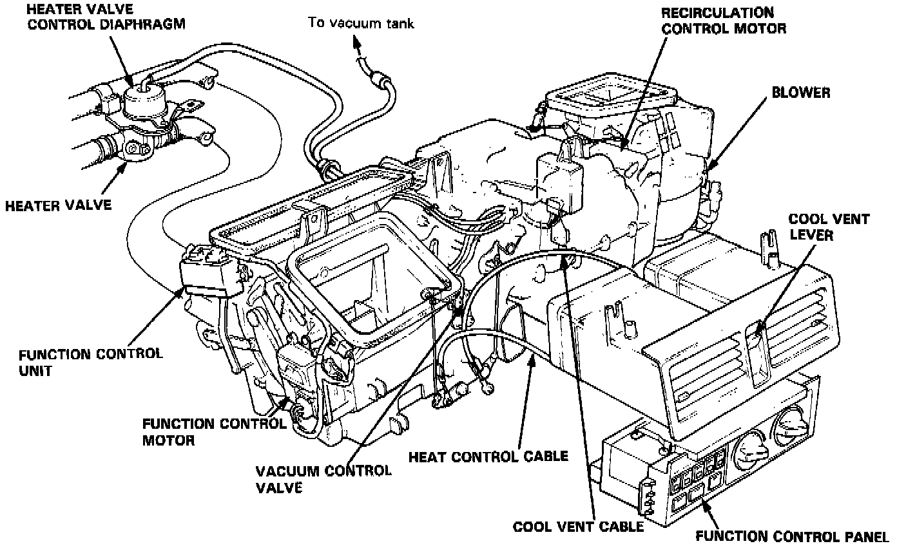

Operation CHARM
: Car repair manuals for everyone.
Home
>>
Acura
>>
1987
>>
Legend Sedan V6-2494cc 2.5L SOHC FI
>>
Repair and Diagnosis
>>
Heating and Air Conditioning
>>
Heater Control Valve
>>
Locations
>>
Manual Heating and Air Conditioning
Manual Heating and Air Conditioning
Vacuum Control:
